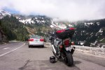

These are my bikes. There are many others like them, but these ones are mine. I've not been riding long in the Grand Scheme of Things (TM) but here's the list of bikes I've had the pleasure of putting in the garage.
Vtr Streetfigher project
July 2005 - 2010This bike doesn't even exist yet. All it is is a collection of parts that will someday resemble a motorcycle. I've gone an unusual route with this one; instead of starting with a complete running bike, I've purchased parts and building up a new bike from scratch. It's the expensive way to do it, but I plan to leave almost nothing of the original bike untouched, so that's not so much of an issue with me.
Here's the plan: Start with a Vtr frame, subframe and engine. The engine will be bored out 1.0mm and have larger, high compression JE pistons fitted, stage 1 valves port and polished, as well as other detail improvements. I'm looking to get even more low to mid range torque rather than top-end horsepower. Onto this basic setup will be fitted CBR929 forks and clipons. I'm going for clipons for the low-slung cafe racer look (everyone always seems to go with the MX bars on Vtr projects). The front rim is from a CBR900RR because it matches the rear half of the bike. At the rear end will be a VFR800 single-sided swingarm and rim. This fitment requires a custom made rear header due to the relocated shock, so I'm going all out and will have a custom made left-side exit, single can setup. This should really emphasise the single swinger rear end. For the details, the oil cooler is a larger unit from a GSXR1000, while the radiator will be a custom built item located under the area where the rear seat normally would be (a stock Vtr has them side mounted at the front of the frame, but that looks ugly once the fairing is removed). The tank I will custom-build myself from carbon fibre, and the tail section will probably be similar, though I haven't decided on what look I want yet. Once this is all completed, I will then strip the bike and have the frame and swingarm powdercoated red and have a heap of stainless braided hoses made up for oil and water lines.

|
{kind=link}
{kind=link}
{kind=link}
2002 Blackbird
Jan 2003 -The second one! Missed my first one so much I had to get another. This is my long-distance hauler in the US. I tend to do a lot of trips down to San Fran and Monterey areas. A typical day-ride on this bike would be more than 400 miles. I do the Seattle-Monterey ride in about 13 hours - it's 915 miles door to door, and I no longer need the map or GPS I've done it so often! Modifications (so far!):
- PCIII (custom mapping by Mike Velasco).
- Akrapovicz Sport Production full system exhaust
- Geelong Carbon Craft carbon tank protector and hugger
- Rich's custom seat
- Ohlins rear shock
- Rebuilt forks (Eibach 0.95kg springs, SuspensionTech valves)
- Givi screen
- Scottoiler touring kit
- Hotgrips
- Dual Heat-Troller
- nonFango hard bags and topbox (same set from off my old XX)
- Evo IV Delink kit from 321 Ignition
- Front indicator clear lense kit
- Lockhart Phillips mini indicators on rear
- JAWS frame plugs
|  |
{kind=link}
{kind=link}
{kind=link}
2002 RSV-R
May 2002 - June 2005The bike for my Seattle fun rinding. 02 RSV-R. Lots of fun. Didn't like the stock Pirelli Super Corsas, tried D208GPs and finally settled on BT012SS. Best ride was 1400 miles in 3 days. Not too bad for a sport bike and plenty comfy enough to do those sorts of journeys without any pain. It was stolen and then found again a few days later. A busted radiator hose connection seems to be the only reason it was returned untrashed by the joyriders. In the end I sold it because I started getting bored riding it - it's the first bike I've sold that hasn't been crashed by me at least once (either on the track or road)!
- Staintune Exhaust
- Evoluzione EVO 2002 Chip
- 99-01 airbox inlet
- Evoluzione Fuel Regulator
- Evoluzione Race Airbox kit
- Evoluzione oil temp thermostat
- Evoluzione spark plug leads
- Evoluzione rear indicator conversion kit, LED indicators & clear lenses
- Scottoiler
- Eagle Tinted screen
- Undertail chop to remove indicator mounts
- Mototek Rearsets (silver)
- Geelong Carbon Craft carbon tank protector and chain guard
- 44T rear sprocket
- BrakeTech stainless rotors

|
{kind=link}
{kind=link}
{kind=link}
{kind=link}
{kind=link}
1993 VFR400 (NC30)
Jan 2002 - Jan 2003This is my nutter bike. I have it for track days and local club racing. In the eastern states there is a huge group racing NC30s. Grey imports, most of them are never registered (mine doesn't have compliance for example) and head straight to the race track. The series are amateur, where if you turn up with sponsorship stickers on the bike you get laughed off the track.
For those that know the bike, this has had the 17in rear wheel conversion and adjustable compression damping for the rear shock. Rebuilt front forks and revalved rear and raised ride height, but needs a heavier spring. Only mod left to make is the airbox. Been put over the dyno and it's making 60HP at the rear wheel, which is pretty competitive. There's a dyno graph below. Quite a dip at 12K so I'll have to look into smoothing that out.
As you see in one of the pictures below, this bike has everything. Even came
with tyre warmers! Spare set of rims, no spare glass. 60mm race exhaust. Beside
it is my Vtr 1000 post-accident. That's the pretty side! In the 2nd photo, the
red/white/blue bike is a road-going version of the same bike. It belongs to my
friend Chris and they share a garage and trailer when we go to race days. I'm
being very careful of my parts as his bike seems to be mysteriously "improving"
each time I go to his place.:)
Photos
All photos
{kind=link}
{kind=link}
{kind=link}
{kind=link}
{kind=link}
{kind=link}
{kind=link}
{kind=link}
1998 Vtr1000F
June 2001 - Feb 2003Black, V-Twin, Aftermarket exhausts (Staintunes), what else do you need to know! :). Bought mid 2001 in Sydney while I've been waiting for the USA work visa. Dec 2001 it went for a low-speed slide down the road due to diesel spill as I was going around a corner. As a result, all the broken bits got replaced by trick bits. First photo below shows it before the accident and if you have a look at the other bike with the VFR400 above, you'll see how it looks afterwards. Just a set of rearsets to go to make it a nice track bike! Prior to binning it, I've been clocked around Eastern Creek at 1:52 without the Ohlins rear suspension. Reasonably slow and after having attended a few more racing courses, I am substantially faster now.
A few mods:
- Ohlins rear shock
- Rebuilt forks (Eibach 0.9kg springs, SuspensionTech valves)
- Goodridge braided lines front and rear
- Staintune hi-mount exhausts
- Polished rims front and rear
- Geelong Carbon Craft c/f hugger
- Scottoiler
- Eagle Screens tinted screen
- Mini aftermarket indicators front and rear
- Genmar mirror extenders
- Ventura rack and bag
- Black tinted headlight cover
- Lockhart Phillips FastGlass Lower fairing
Photos

|
|||
{kind=link}
{kind=link}
{kind=link}
{kind=link}
{kind=link}
{kind=link}
{kind=link}
1990 KR-1S
July 1997 - Nov 2000
The most fun bike you could ever own! Every set of lights is your own GP race. There's not that much that can beat it either on the road or the race track. Capable of staying with the big boys this is one shit-eating grin generator. Smokes like crazy when winding the throttle on or if you've been stuck idling in traffic.
This is the bike I learnt to ride on. Crashed more times than I care to remember, it is one hell of a bike. I've had to sell it because I was moving to the UK. However, maybe that is just an oppourtunity to buy that Aprilla RS250 I've been dreaming about....
Photos
{kind=link}
{kind=link}
1997 CBR1100XX
Nov 1999 - April 2000The mighty Blackbird. The bike that woke up the ultra-sports big bore sports bike class back in 1996. My 1997 model was the chariot that carted me around Australia. I did 30,000km in 4 months on it before it got written off by a dickhead van driver that wasn't paying attention to the road.
The Blackbird was my touring bike. It was kitted out with NonFango panniers (42L) and top box(50L). This huge carrying capacity meant I could travel, with the aid of a tank bag without needing to strap anything onto the bike. In the crappy wet weather of the first couple of weeks of my round australia tour, this was a major bonus. As you can see (front, rear) they look very slick on the bike. One of the major reasons is that they look a hell of a lot better than the Givi gear and are a fraction cheaper.
{kind=link}
{kind=link}
Also installed was a sheepskin seat cover and carbon fibre tank protector. I kept the original screen (useful to direct the air onto your chest for long hours in the saddle and to keep you cool on really hot days) and bars. No throttle lock was fitted either.
On April 15, 2000 I got wiped out by a van driver who was not paying attention to the road. After a wonderful day trip out to York, followed by a stupidly hair-raising run through Mundaring Weir, I settled back into the traffic for the cruise home. Coming around a slow sweeping corner in traffic I hear the squeal of locked brakes. Barely glancing up and to my right I notice a white van locked up, with smoke pouring out of the rear tyres coming sideways at me. With no time to react, I've ploughed straight into the front of the van at about 45 degrees. This catapaulted me over the bars, flying 20m in the air before touching down in a ditch on the side of the road. The end result of the bike you can see below.
Photos

|
{kind=link}
1996 ZX6R
June 2000 - Nov 2000
Technically not mine, it belongs to my ex-flatmate. He took it back to Sydney but left the WA plates on it. Decided he wanted to sell it. As a joke, I suggested I'd ride it back over here and then sell it for him. He took me up on it! Had it sitting in the garage for 5 months as I desparately tried to sell the thing. Not a bad bike, but it doesn't really like the long haul touring. Sport touring for day or overnight trips would be good, but 150km/h across 1400km of Nullarbor it is not made for.
{kind=link}
{kind=link}
{kind=link}